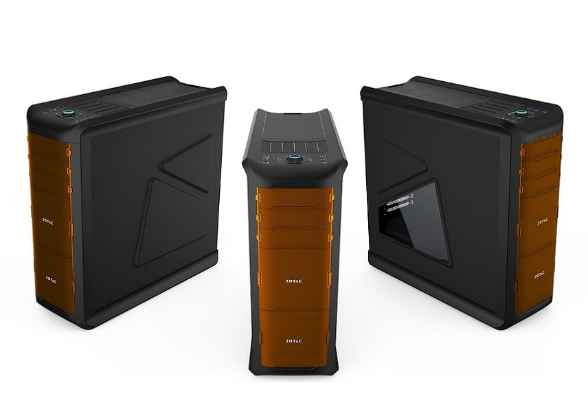

Chassit är lådan som alla komponenter är i. Den finns i många olika storlekar och former. Några storlekar är till exempel midi tower och big tower, Då tower står för att datorn är stående som ett rätblock. Barbone är ett mindre chassi som ligger ner och tar väldigt lite plats. Med chassit som du köper brukar det följa med skruvar och fläktar till datorn så det behöver du inte köpa själv. Chassin med glas på sidan blir allt mer populära. RGB är något som har blivit jättestort de sista att ha i sin datorbygd. RGB (Red, Gren, Blue) är en lampa som består av blå grön och röd LED-lampor som sedan kan lysa i vilka färger som helst.
Chassit påverkar inte prestandan på datorn så där är det stor sett bara att ta något du tycker är snyggt så länge det matchar med övriga komponenter i datorn. Om du t.ex. har valt ett moderkort av formfaktorn ATX är det viktigt att du tittar upp så att chassit som du ska välja stödjer detta. Samma sak gäller även nätaggregat. Men jag rekommenderar fortfarande att köpa ett chassi från ett känt kvalitetsmärke som t.ex. Phanteks och Fractal design då de chassin är oftast lättare att bygga i då de är mer genomtänkta och mer plats för kabeldragning än lågkvalitativa chassin.
